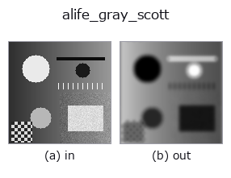

artificial-life op• Datenarten: image → image
• Aufruf: fullseye.apply(img, "alife_gray_scott", a=0.5, b=0.5) (das 2-D-Modell ist ein Bild plus zwei skalare Regler a,b∈[0,1])

*Die Abbildung ist die tatsächliche Ausgabe auf einer synthetischen 128×128-Eingabe. Links Eingabe, rechts Ausgabe. Punktwolken als Draufsicht-Streudiagramm (Helligkeit = z), 1-D-Reihen als Linie, Volumen als Maximum-Projektion entlang z, Videos als mittleres Bild, komplexe Bilder als Betrag; Rückgabewerte, die kein Bild ergeben, werden als Werte gezeigt.*
Regler a durchfahren (0,1 / 0,5 / 0,9, der andere Regler auf Standard):
▸ alife_gray_scott: knob a sweep (docs site)
Regler b durchfahren (0,1 / 0,5 / 0,9, der andere Regler auf Standard):
▸ alife_gray_scott: knob b sweep (docs site)
Auf anderen Bildern (synthetische Szene / Foto / Münzen. Obere Reihe: Eingaben, untere Reihe: deren Ausgaben. Regler auf Standard):
▸ alife_gray_scott: other inputs (docs site)
*Die 4. Spalte ist eine Farb-Eingabe (H,W,3). Dieser Op verarbeitet Farbe, ohne Kanäle zu vermischen (er faltet den Farbkanal nicht als dritte Raumachse).*
Gray-Scott-Reaktions-Diffusion, initialisiert mit dem Bild.
> Die ausführliche Beschreibung unten ist der Originaltext — Zusammenfassung und Überschriften sind übersetzt.
Two coupled species on a torus,
u_t = Du*lap(u) - u v^2 + F (1 - u)
v_t = Dv*lap(v) + u v^2 - (F + K) v
with Du=0.16, Dv=0.08. The image seeds v (the autocatalyst) while u starts
from the depleted complement, so bright input pixels are the nuclei from
which spots / stripes / labyrinths grow. `a` sets the feed rate
F = 0.02 + 0.06a *and* the number of integration steps T = 8 + int(20a);
`b` sets the kill rate K = 0.05 + 0.02b. Returns the normalised v field.
• Leitfaden zur Familie gallery2d_physics_alife_3d
• Katalog der Beispieldaten (Download-URLs / Lizenzen) — 2-D nutzt skimage.data (BSD/Public Domain) plus synthetische Bilder, 3-D nennt Download-URLs echter Datenquellen (Stanford, PDS, …).
• Herkunft und Literatur der Operatoren — die Quellen der Forschung/Verfahren, auf denen diese Operatorfamilie beruht.
• Der kanonische Algorithmus (Autor, Jahr) und seine Anwendungen stehen im Familienleitfaden oben.
Das Programm unten ist nachweislich lauffähig (gleiche Eingabe wie die Abbildung). In der Studio-Hilfe wird dieser Block zu Schaltflächen, die es sofort laden und ausführen.
alife_gray_scott 0.50 0.50
▸ Load this pipeline · Load & run
• gallery2d_physics_alife_3d — py -3.11 examples/gallery2d_physics_alife_3d.py
image als Eingabe)identity · gaussian · mean_box · bilateral · unsharp · median · min_filter · max_filter
artificial-life)alife_turing · alife_life_step · alife_cyclic_ca · alife_perona_malik · alife_curvature_flow · alife_dla · alife_reaction_bz · alife_wolfram1d
*Provenance: ops.py — 2D Operator-Registry. Diese Notiz wird von tools/opdocs.py md erzeugt (nicht von Hand bearbeiten).*
© 2026 Kazufumi Furuse — Fullseye operator documentation. Licensed under Apache-2.0.
{kind=link}
{kind=link}
{kind=link}